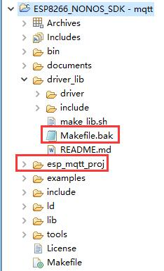
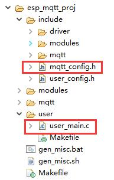
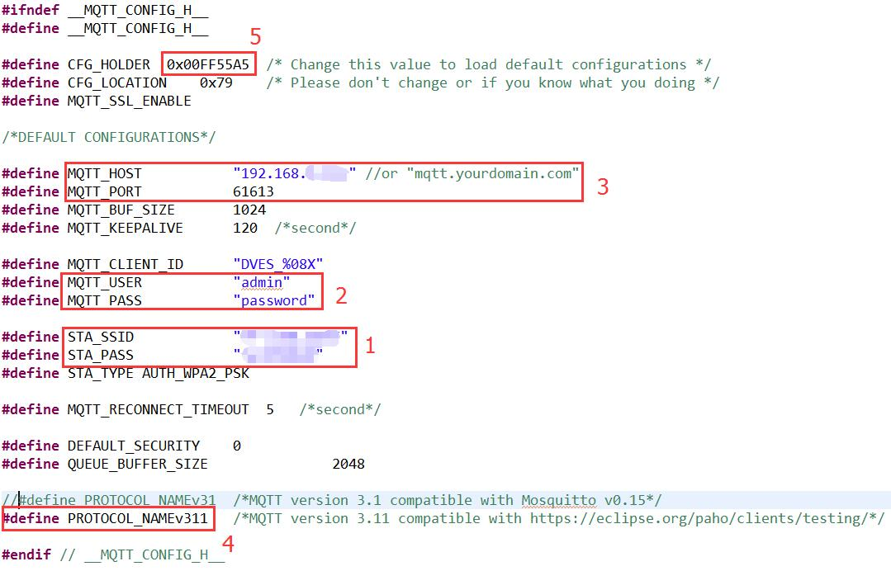
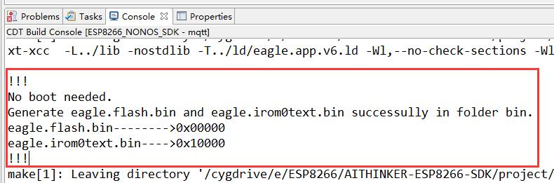
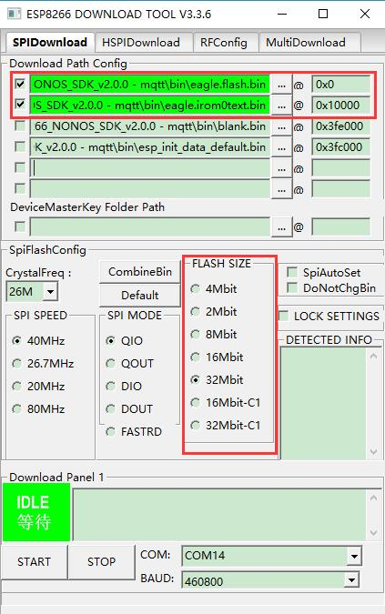
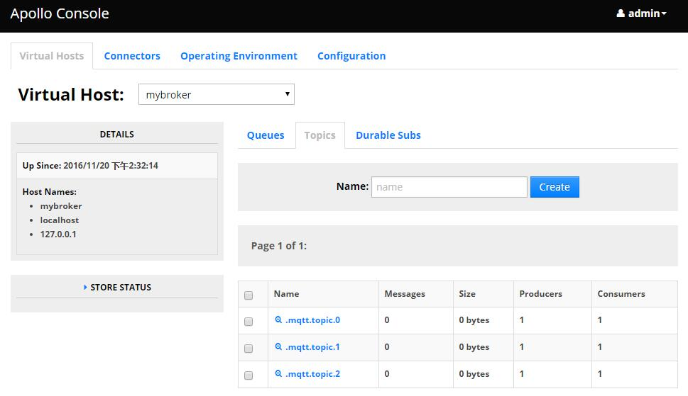
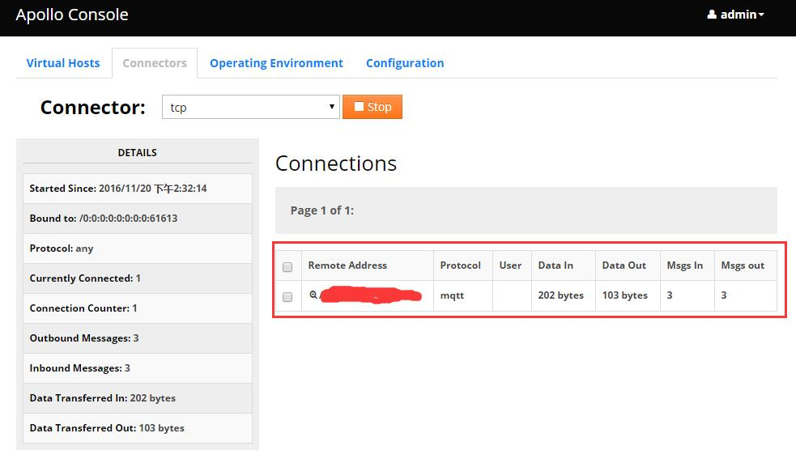

前言
MQTT是IBM开发的一个即时通讯协议，面向M2M和物联网的连接，采用轻量级发布和订阅消息传输机制，并且有可能成为物联网的重要组成部分。
ESP8266是一款物美价廉的Wi-Fi芯片，集成Tensilica L106 钻石系列的32 位处理器和片上SRAM，多达17 个GPIO口，并拥有IIC、IIS、UART、PWM、IR遥控等片上资源。
ESP8266还提供官方的软件开发开发包（SDK），目前最新版本是「ESP8266 NONOS SDK V2.2.0」。
这篇文章主要讲解如何使用ESP8266作为MQTT客户端，并连上在本地电脑搭建的MQTT服务器。
开发环境
首先简单说明一下博主的开发环境：
- ESP8266开发环境：ESP8266 IDE 2.0
- ESP8266 SDK版本：ESP8266 NONOS SDK V2.2.0
- MQTT服务器：Apollo 1.7.1（本地搭建）
- 操作系统：64位 Win10系统
- ESP8266开发板：NodeMCU（4MB Flash）
导入工程
如果读者和博主使用的开发环境一样，那么步骤1~4就好理解了，不是的话直接看图片和步骤5：
- 在IDE环境中通过「File」->「Import」；
- 弹窗中选择「C/C++」->「Existing Code as Makefile project」；
- 下一步「Browse…」，编译器选择「Cygwin GCC」；
- 之后导入的工程目录如上图，其中给「dirver_lib」文件下面的Makeflie添加bak后缀或删除掉，免得编译通不过。
- 从「example」文件夹中拷贝esp_mqtt_proj文件夹到主目录，点击编译按钮，如果成功就完成这一步骤了。

工程目录
工程目录图
代码分析

mqtt例程目录
user_main.c
mqtt_config.h
其中user_main.c不用说了，玩过ESP8266的朋友都知道这是放主代码的地方，其中user_init函数是SDK提供开发者放置初始化代码的地方。下面主要分析mqtt_config.h。
mqtt_config.h代码清单
1 | #ifndef __MQTT_CONFIG_H__ |
在这个文件中，有几个宏定义可能需要修改的
- MQTT_HOST，MQTT服务器地址
- MQTT_PORT，MQTT服务器端口
- MQTT_USER，MQTT服务器用户名
- MQTT_PASS，MQTT服务器密码
- STA_SSID，WI-FI帐号
- STA_PASS，WI-FI密码
还有一个最重要的宏定义——CFG_HOLDER，因为这个MQTT示例在ESP8266运行过一次后会把这些信息保存到FLASH中，如果要继续修改这些信息，记得要修改CFG_HOLDER这个宏定义，改成另一个数值即可。
CFG_HOLDER作的用是：在CFG_Load函数中，如果发现从FLASH读取出来的CFG_HOLDER数值和宏定义的不一样，则会更新这些信息，并保存到FLASH中。不修改CFG_HOLDER的话可能会发觉明明用户名和密码都正确但是就是连接不上去。
修改代码及测试
修改代码
根据上面分析，下面我们就可以修改示例代码：
- 把STA_SSID和STA_PASS修改为自己的WiFI名和密码；
- 修改MQTT_USER和MQTT_PASS为对应的MQTT服务器的用户名和密码，Apollo服务器默认是admin和password；
- 修改MQTT_HOST和MQTT_PORT为MQTT服务器IP和PORT，目前是使用本地的MQTT服务器，所以是修改为自己电脑的IP和61613端口，PORT是整型值；
- 根据MQTT服务器的协议不同，可能需要使用MQTT v3.1.1版本，所以把PROTOCOL_NAMEv31注释掉，使用PROTOCOL_NAMEv311。源码的PROTOCOL_NAMEv311前面没有#define，自己加上就行。
- 最后，修改CFG_HOLDER，以让这些配置生效，直接给原来CFG_HOLDER定义的数值加1即可。

修改示例配置
编译下载
编译，查看Console窗口，如果输出

编译信息
那说明代码已经编译成功。另外要注意，ESP8266 SDK v2.0以后版本生成的eagle.irom0text.bin烧写起始地址是0x10000，而之前的版本烧写地址是0x40000；eagle.flash.bin还是0x00000。由于博主使用的是4MB Flash的ESP8266，所以也建议读者先确定手头的ESP8266是不是4MB Flash（即32Mbit Flash，注意单位！4MB=32Mbit，Flash一般是以bit计算！）
另外如果Problems窗口报Errors的，只要Console窗口编译通过，就可以不用管。
下载配置参考图片：

下载配置
提醒：blank.bin和default.bin烧写一次就行，另外也要留意不同的Flash大小，blank.bin和default.bin烧写地址也不同。
上电测试
如果前面一切顺利，打开串口，设置波特率为115200，上电后前面的乱码不用管，之后串口打印信息如下，省略了一部分信息：1
2
3
4
5
6
7
8
9
10
11
12
13
14
15
16
17
18
19
20
21
22
23
24
25
26
27
28> load ...
> default configuration
> MQTT_InitConnection
> MQTT_InitClient
WIFI_INIT
> ……（省略）
> connected with **[你的WiFi名]**, channel 6
> dhcp client start...
> STATION_IDLE
> STATION_IDLE
> ip:**[WiFi分配给ESP8266的IP]**,mask:255.255.255.0,gw:**[WiFi网关IP]**
> TCP: Connect to ip **[MQTT服务器IP:PORT]**
> MQTT: Connected to broker **[MQTT服务器IP:PORT]**
> MQTT: Sending, type: 1, id: 0000
> TCP: Sent
> TCP: data received 4 bytes
> MQTT: Connected to **[MQTT服务器IP:PORT]**
> MQTT: Connected
> MQTT: queue subscribe, topic"/mqtt/topic/0", id: 1
> MQTT: queue subscribe, topic"/mqtt/topic/1", id: 2
> MQTT: queue subscribe, topic"/mqtt/topic/2", id: 3
> MQTT: queuing publish, length: 23, queue size(66/2048)
> MQTT: queuing publish, length: 25, queue size(91/2048)
> MQTT: queuing publish, length: 25, queue size(118/2048)
> ……
其中加粗带方括号的字段根据测试环境不同而不同。
同时看源码和串口信息可知，ESP8266向MQTT服务器订阅了三个主题，假设使用的是本地搭建的MQTT服务器，那么查看MQTT服务器后台就可以看到：

ESP8266MQTT示例代码订阅
同时在后台的Connects页面也可以看到ESP8266的链接：

ESP8266后台链接
MQTT本地服务器搭建教程Windows版链接在后面。
另外博主已经用ESP8266的MQTT连接上了OneNET云，连接该云需要注释掉下面这条语句，在user_init函数下。
1 | MQTT_InitLWT(&mqttClient, "/lwt", "offline", 0, 0); |
原因是OneNET不支持，否则连接不上。
其他
- 【MQTT服务器】
- 【ESP8266资料】ESP8266官网资源链接：http://espressif.com/zh-hans/products/hardware/esp8266ex/resources